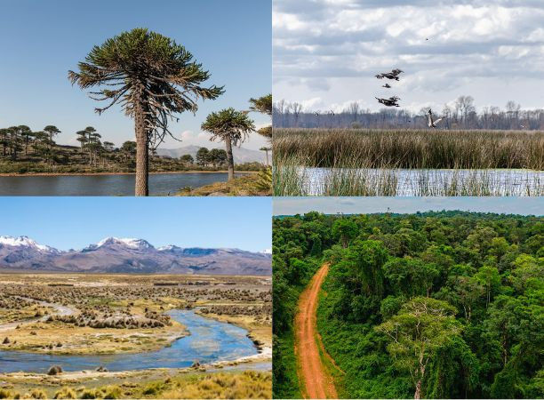
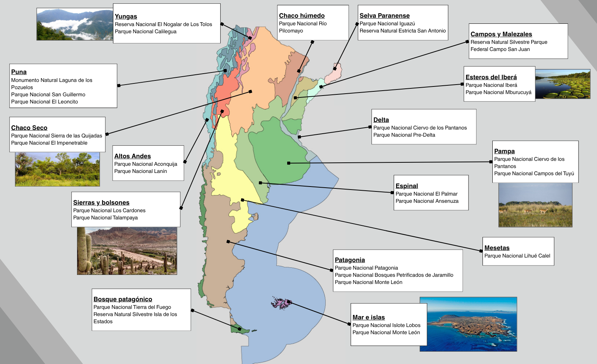

Ecorregiones

Se le llama "Ecorregión" a un área con ciertas características en su ecología, clima, geomorfología y, en sí, biogeográficas que las distinguen entre sí. A pesar de esto, no sólo se ven definidas por atributos naturales, sino que también suelen presentar particularidades sociopolíticas propias, a raíz del contacto entre las comunidades humanas con las condiciones del paisaje que los rodea. Así, encontramos más de 860 ecorregiones en ambientes terrestres de todo el mundo, sin definirse (todavía) la cantidad de las mismas en entornos marítimos. La Argentina se reconoce como uno de los países con mayor diversidad biogeográfica del planeta, con 18 ecorregiones distintas.
En la Argentina se reconoce como uno de los países con mayor diversidad biogeográfica del planeta, con 18 ecorregiones distintas. Gracias a esto, se registran más de 36.000 especies de seres vivos en el territorio nacional: 10.000 plantas, 1400 peces, reptiles y anfibios, 395 mamíferos y alrededor de 1000 aves.


Un "Parque Nacional" es un área protegida por una entidad estatal, que representa una parte de la naturaleza de interés tanto científico como turístico o cultural. Consecuentemente, varios de estos lugares son los últimos refugios de algunas especies en peligro de extinción, y ofrecen la oportunidad de observarlas en silvestría con poco contacto humano, ya que suelen estar ubicados en zonas que no se han visto alteradas directamente por la mano del ser humano.
En Argentina, el primer Parque Nacional fue el del Lago Nahuel Huapí, en la provincias de Río Negro y Neuquén, creado en 1937 con los terrenos delegados por el Perito Moreno en 1903 al Estado, con la condición de que se preservaran intactas. Además, conserva el primer vivero forestal de la Argentina, en la actualidad reconocido a escala internacional. En la actualidad, ya hay 39 parques nacionales en el país.
Los siguientes enlaces llevarán a una breves fichas sobre algunos parques nacionales:
A pesar de ser reducidas (por fines prácticos) a 17 ecorregiones, se las representa en este mapa, parcialmente prestado, pero con una imprenta propia.

El siguiente video es del canal "Encuentro", de divulgación científica, en el que se presentan y promocionan varios de los programas en emisión del mismo. Tras pelear un tiempo como un video remoto (impidiendo su visualización), pudo ser finalmente derrotado al descargarse (sin el YT Premium) y tratarlo como local.